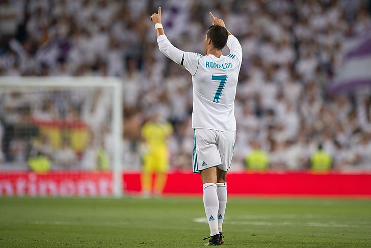

ik ben geintereseerd in de sport voetbal. mijn idool is Cristiano Ronaldo. Hij is een topsporter die goede motivatie aan
je geeft. Naast voetbal kijk ik ook altijd naar tennis. Tennis is een mooie sport waar je veel conditie nodig hebt want soms
kan je uren lang op een tennis baan spelen. Mijn idool van tennis is de Servier Novak Djokovic. in 2012 speelde hij de langste Grand Slam
finale ooit tegen Nadal, het duurde bijna 6 uur lang. (Klik op de foto van Cristiano ronaldo.)(klik op de foto van Novak Djokovic)